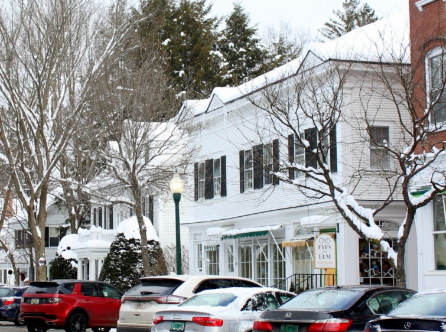
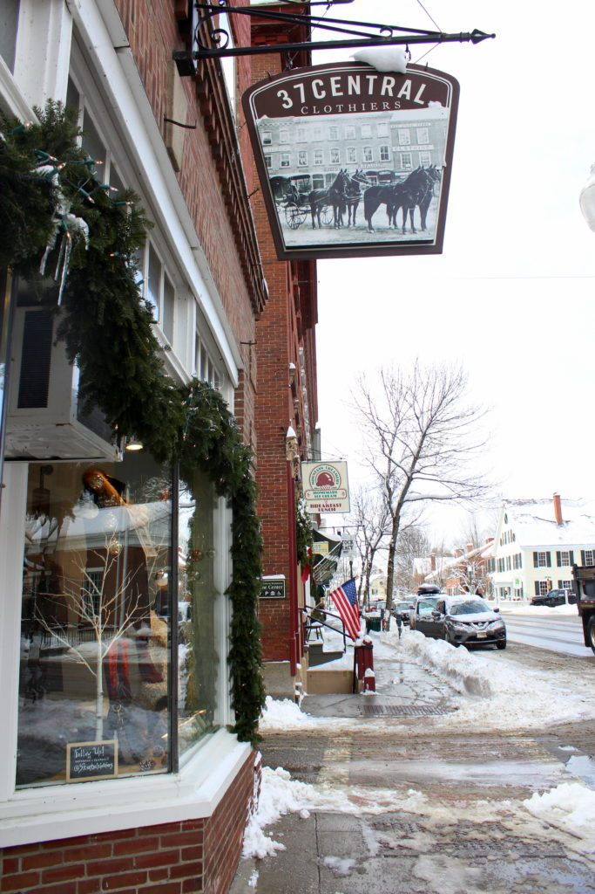
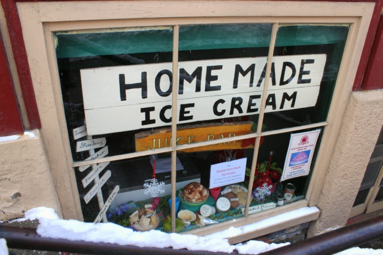

.png)
.PNG)
.PNG)
.PNG)
.PNG)
.PNG)
.JPG)
.JPG)
.PNG)
.PNG)



We have reached the last post of our Christmas season trip to Vermont, and today I want to share with you a bit of the beautiful town of Woodstock. (You’re going to love it! 🙂 )

The snow storm we had driven through to get there moved on during the night. So we spent the next day exploring the town (in the freezing cold!)


It truly looked like a scene out of a Currier and Ives work of art.

And every shop and restaurant seemed to be decorated for Christmas.

The Woodstock Flannel Company shop even had their stockings hung by the mantel with care. 🙂

Vermont seems to have quite a few general stores. Gillingham’s consisted of several rooms, and it was a lot of fun to wander through it.

But one of my favorite shops in Woodstock was Clover.

Just take a look at all those pillows!


 Even these gorgeous buildings were businesses! 🙂
Even these gorgeous buildings were businesses! 🙂


Check out the snowman below. 🙂


We also made our way down a number of streets to look at some of the gorgeous old houses. (And yes, there were a lot of white ones!)


The snow was like frosting spread atop all the architectural details.


What a beautiful church we found down one of the streets!

And then there were the covered bridges.
Sooo charming!


Jackie Greaney had recommended that we not miss an opportunity to dine at the Simon Pearce restaurant at the mill in the nearby village of Quechee, VT. So we drove the few miles there and found this wonderfully decorated building.


We parked in the lot by the edge of the river and entered through these double doors.

Inside was a fabulous gallery of Simon Pearce glassware…dishes…

and also wooden pieces.

And they even had a gingerbread house replica of their gallery, restaurant, and nearby covered bridge!

The restaurant is on the river side of the building and has a wonderful view.

Here is a look at just a part of their menu from that day.

Bread and butter before our meals…

All the glassware and dishes in the restaurant are from the Simon Pearce collection. I couldn’t resist a mug of their delicious hot cider on such a cold day. 🙂

After lunch we continued exploring the area a little more, and then it was time to head back to New Haven, Connecticut. (By car…not by sleigh. 🙂 )

Our son had to go back to finish up his exams at law school, and we had to catch a flight home the next morning. We were so thrilled that he was able to join us on this trip (even if he did have to hang out in coffee shops and study.)

It was such a fun and memorable trip. Thank you for following along with me as I have shared it with all of you! I hope you get to enjoy Vermont during the holidays one year, and I also hope that we get to visit there again…hopefully to experience it in the fall. Have a great week!
Until next time…


.PNG)
I thoroughly enjoyed your posts of the trip to Vermont. It is definitely on my bucket list. I have been to Vermont but it was in the summer (hot!).
Thank you!!
Oh wow. Yes, definitely do Woodstock in the autumn/fall! We did in 2013 and it was beyond gorgeous. I would so love to live there – I was/am perfectly smitten. So fabulous to see your take on the place and remember our trip. I would have loved to have eaten at Simon Pearce – alas we just drove past – but maybe someday…
Such beautiful pictures – looks like the perfect time to visit! I love general stores and could shop in them for hours! I have enjoyed all your posts about the Vermont trip and can’t wait to follow some of your footsteps one day soon. Thanks for sharing!
Kelly!
Again; another great entry!
I have been to Simon Pearce a couple of times…always in the winter and have never been disappointed with our meal. I’m happy that you got to visit the shop and restaurant.
Cindy
What an absolutely beautiful place to see from your photos and it makes me want to go that much more! So beautiful with the snow but it’s probably gorgeous in the fall. Thank you for sharing your lovely visit with us.
What a picturesque place! It would be just as I would have imagined had I been there. Thanks for the tour! 😉
What a beautiful town. Looking just like a Christmas card. Thank you for sharing the little glimpses into the shops. Wonderful merchandising! And the churches! Makes me think of my Mom-in-loves Dept 56 collection. Thank you for a cozy little arm chair trip.
Looks like you had a lovely visit. I’ve had my share of snow already – but the pictures are beautiful, as you said, like frosting. I loved the names of the stores & businesses. I would especially like to visit the Simon Pearce Glass; and Clover, I’m intrigued! Not a winter trip for me, but maybe summer or fall.
Kelly,
Thank you for sharing your trip with us! It was enchanting.
Take care.
Dawn
Oh, how beautiful!!! My favorite things were “snow like frosting” and the Simon Pierce restaurant! Such pretty homes and interesting buildings! Thank you for sharing!
Oh my word…I just love this trip you went on and would love to move there. I am from the north (PA) but since we have been in GA 11 years I don’t know that I can do snow again. When we visit in the winter that takes care of any snow fix I might need. I think the Fall would be a wonderful time to Vermont.
What a beautiful picturesque place. The snow made it even more so!! What a treat to spend some time there during the holiday season. Perfect in every way! 🙂
You know what I have loved about all of the pictures you have shared from this trip? …It isn’t the snow. I am not a fan of snow! IT is the classic decorations. The greenery and the ribbons. I think that is what I love about your home at Christmas as well. Just a reminder that the traditional decorations like that make a home beautiful at Christmas, not the novelty items that abound these days. I love a few novelty items as well, but the pictures that draw me in are those with the greenery and bows. I have enjoyed your photos.
You really visited at the perfect time – so picturesque! We are in Killington, VT right now. In fact, we got snowed in last night. We were up here to ski this weekend and when the snow came in yesterday, we decided to stay the extra night. My kids were thrilled to miss school today. I didn’t get to Woodstock this visit but hopefully next time! You got to see so many beautiful areas and I was so excited to follow along on your wonderful Vermont vacation! Thanks for sharing your trip with us!
Shelley
Just as I’d pictured it! And wonderful with a fresh snow. I’ve not heard of Simon Pearce, so I will be checking that out. Thanks for always thinking of us when you are out and about!
ohhhhhhh what a lovely post. It was just beautiful. I loved the shops and the houses. thank you for sharing. Where are we going next?
Oh Kelly, this is one of my favorite posts! Your pictures are just gorgeous! I love your “frosting spread on top of the architectural details” description. Thank you so much for sharing! I’ve added Vermont in the snow to my bucket list!
So many of my favourite things here … Snow, New. England, with it’s gorgeous style buildings, walking, great food, cute shops … all wrapped up in red ribbon and dusted with snow! Thank you Kelly! I’ve loved every moment of our wonderful trip and as always, I’m grateful that you take the time to share these beautiful places.
Rosemary
ps love the unique gingerbread restaurant and covered bridge as well!